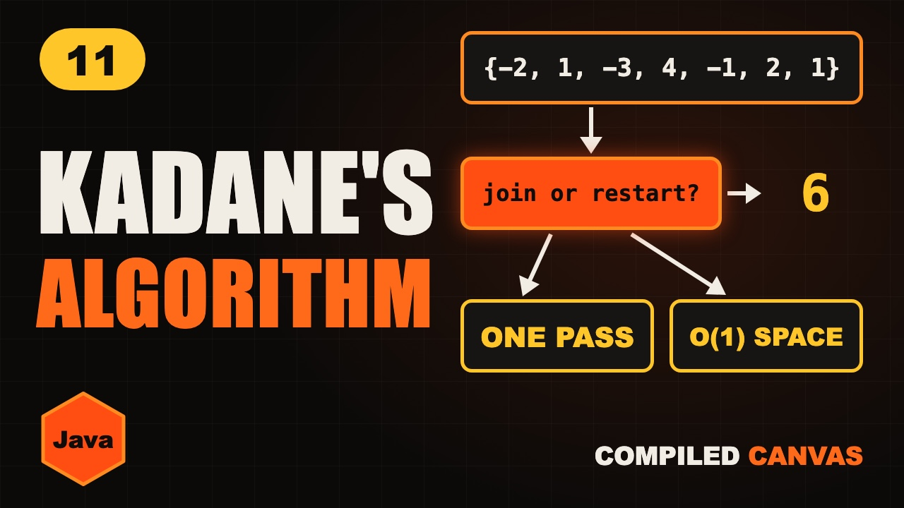

Kadane's Algorithm in Java: Maximum Subarray Sum

The video goes live on 5 Nov 2026 at 6:00 PM IST. The notes are ready now.
?What this episode covers
Kadane's algorithm finds the biggest total of numbers in a row. The slow way tries every stretch with two loops, which is O(n²). Kadane's walks once and asks one question at each number: join the old stretch, or start a new one here? It picks the bigger of the two.
The reason it works is simple. A running total that has gone negative can only drag the next number down, so we drop it and restart. We walk through 3, -2, 5, -9, 4 step by step, write it in Java with two variables, then solve LeetCode 53.
We also handle the follow-ups interviewers ask: all negative numbers, printing the subarray itself, and the circular version, where the answer is the total minus the smallest stretch.
◎What you'll be able to do
- What the problem asks
- The slow way
- Kadane's one rule
- The Java code
- Tricky cases
!The mistake to watch for
Starting from 0 instead of nums[0]. With all negative numbers the answer is the largest one, because a subarray can't be empty.
✦Key moments tap one to jump there
↗Full transcript
Read the whole lesson
Here are five days of a small shop. Some days it makes money, some days it loses money.
Which days in a row made the most money?
The answer is the first three days. Three, minus two, plus five. That's six.
One trick finds this in a single pass, with just two variables. It's called Kadane's algorithm, and interviewers love it.
Welcome back to Compiled Canvas. This is Episode Eleven of our DSA series. Last time, we learned the sliding window.
Here's the plan. First, what the problem really asks. Then the slow way, and why it hurts. Then Kadane's one simple rule. We'll write it in Java. And we'll handle the tricky cases. A cheat sheet. And an easy quiz at the end.
Let's go.
A subarray means numbers that sit next to each other, in a row.
You can't skip a number. Three and five, without the minus two in between, is not allowed.
So the maximum subarray sum is simple. Look at every possible stretch, and find the biggest total.
The slow way is easy to think of. Start at every position.
From there, keep walking to the end, adding as you go.
And keep the best total you have ever seen.
That's two loops, one inside the other, so it's O of n squared.
With one lakh numbers, that's about five billion additions. Way too slow.
Now here's the idea. Imagine you walk through the days, carrying your running total in a bag.
If the bag holds a profit, carry it forward. It can only help tomorrow.
But if the bag holds a loss, throw it away and start fresh. An old loss can only drag you down.
So at every number, you ask just one question. Should I join the old stretch, or start a new one here?
That's it. That's the whole algorithm.
Let's walk it, step by step. Start at three. Current is three, and best is three.
Next, minus two. Joining gives one, starting fresh gives minus two. So we join. Current is one, best stays three.
Next, five. One plus five is six. A new record, so best becomes six.
Next, minus nine. Joining gives minus three, starting fresh gives minus nine. So we join, and current drops to minus three.
Last, four. Joining gives one, but starting fresh gives four. So we drop the old loss, and start again here.
The end. Best is six, the same answer, and we only walked once.
Here's the Java code. It's short. Two variables, both starting from the first number.
Then one loop, from the second number to the end.
This line is the rule. Start fresh with this number, or join the old stretch. Take the bigger one.
And this line keeps the record.
One loop means O of n time. Two variables means O of one space.
Quick pause, before we go further. If you're finding this video valuable, hit subscribe to Compiled Canvas, and turn on the bell. It's free, it takes one second, and it helps me keep making this complete DSA series for you. Alright, back to it.
Now the famous one, LeetCode problem fifty three. These are the numbers.
Here's current at every step. Look at the four. Current was minus two, so we dropped it and restarted.
Now look at it as a graph. Current climbs, and the highest point is six.
That six comes from four, minus one, two and one.
Your turn. Pause and try these numbers. One, minus two, three, four, minus one.
The answer is seven. Three plus four.
Tricky case one. Every number is negative. Minus three, minus one, minus two.
The answer is minus one, not zero. A subarray can't be empty. That's why we start from the first number, and not from zero.
Tricky case two. The interviewer asks, can you print the subarray too?
Easy. Whenever you restart, remember where you started.
And whenever you beat the record, save that start and this end.
Tricky case three. A circular array, where the end joins back to the start. The best stretch can wrap around.
Here's the trick. If the best part wraps around, then the part left out is the worst stretch.
So take the total, and subtract the smallest subarray. Seven minus minus three is ten.
Run Kadane's twice, once for the biggest and once for the smallest, and return the larger answer. If every number is negative, just use the normal answer.
So, here's the whole thing in one cheat sheet. Pause and screenshot this.
A subarray means numbers in a row, with no skipping.
At every number, join the old stretch or restart.
Math dot max picks the bigger one.
Best keeps the record.
Start from the first number, not zero.
It runs in O of n time and O of one space.
Okay, quiz time. Three easy questions. Pause the video, think, and then hit play.
Question one. What's the answer for two, minus one, three?
Question two. What's the answer for minus five, minus two, minus eight?
Question three. What's the time and the extra space of Kadane's?
Ready?
Question one: Four. Keep the whole stretch.
Question two: Minus two. A subarray can't be empty.
Question three: O of n time, and O of one space.
How many did you get right? Tell me in the comments: three out of three, two, or one.
Let's recap. The slow way is two loops, O of n squared. Kadane's asks one question: join or restart? If the running total is a loss, drop it. One pass, two variables. Circular means total minus the smallest stretch.
Your homework. Solve LeetCode fifty three, maximum subarray. Then try nine one eight, the circular version. And then one twenty one, best time to buy and sell stock. It's Kadane's in disguise. Hints and Java answers are on compiled canvas dot com.
Next episode, the Dutch National Flag. We'll sort zeros, ones and twos in one pass, with three pointers.
And don't forget to subscribe to Compiled Canvas, so you don't miss anything new in tech and the job market. Keep coding, stay consistent, and I'll see you in the next one.